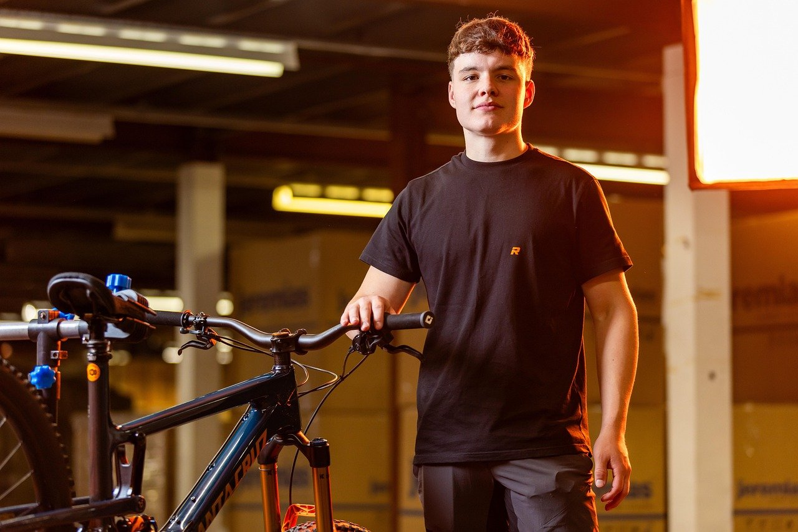
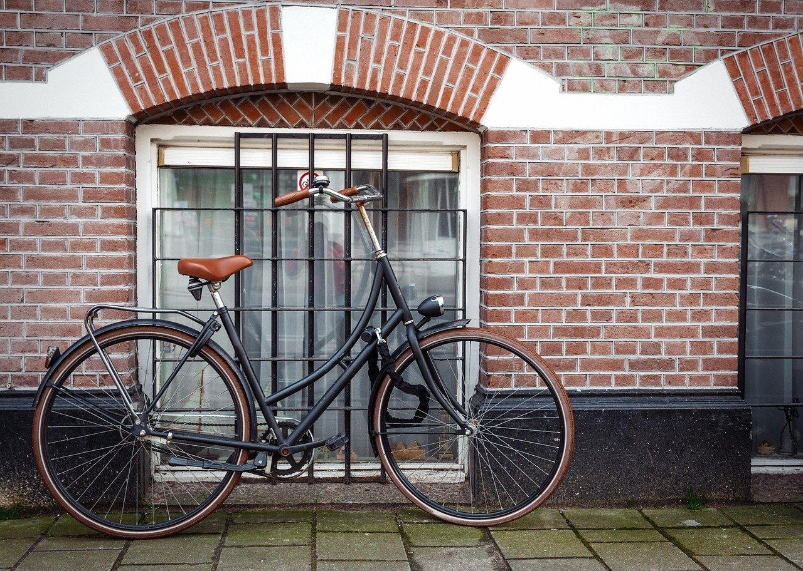
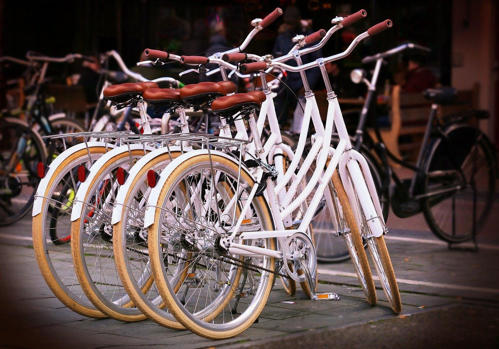
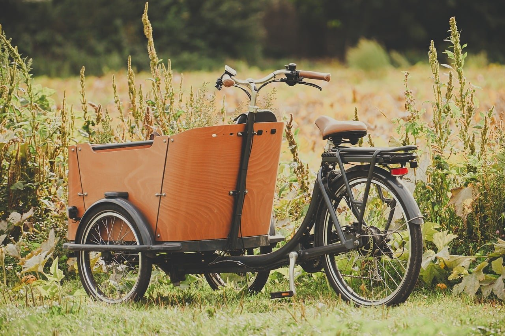

Charlotte Recyclery
Repairs, bikes, and classes just outside NoDa.
(704) 910-3970
812 Atando Avenue, Charlotte
Helping people keep riding
Charlotte Recyclery helps people keep riding with repair services and bikes. We carry bike accessories and run programs for bike education. Volunteers are welcome to get involved in our work.

-
Bike repair
Keep your bike working safely.
-
Learn here
Bike education programs available.
-
Get involved
Volunteer opportunities for everyone.
Services
-
Bicycle repair service
Bicycle repair service available during opening hours.
-
Bicycles
Bicycles in stock at our Charlotte location.
-
Bike accessories
Bike accessories available for sale on site.
-
Bike education programs
Bike education programs for all skill levels.
-
Volunteer opportunities
Volunteer opportunities offered in our community.
Bikes and bike work



Tap a photo to see it larger.
Hours
- Tuesday
- 2pm–8pm
- Wednesday to Friday
- 11am–6pm
- Saturday
- 11am–4pm